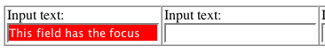
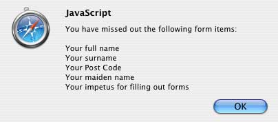
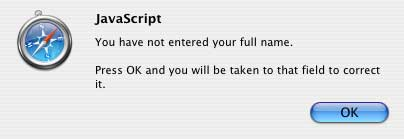
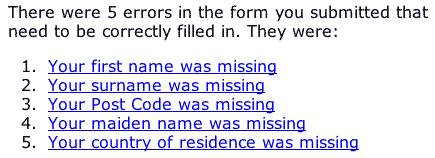

Accessible HTML/XHTML Forms: Advanced Level
Introduction
You’ve covered the basics of form layout,
you’ve read about some of the lesser-known
XHTML tags at your disposal and you’re ready to take on the world. Your
forms are accessible and you, truly, are invincible. Well, the reality is that
you can always go that extra mile, and even when you do there may be a few things
that can bite you on the bum if you’re not looking. In this section we’ll try
to cover off these aspects in as timely a fashion as possible.
Where Am I Now?
Using a mouse it’s invariably quite easy to see where you are in a web page.
With a bigger mouse cursor and mouse trails switched on (if this is available
to you) it becomes even easier. However, if you are sighted but cannot use a
mouse for whatever reason, you will be forced to use the keyboard to navigate
around and will not have the audio prompts that blind users would receive from
a screen reader. Sometimes, it can be difficult to see where the point of focus
is on screen. Browsers may employ a dotted line around the form element that
is currently in focus, but you can make it even easier …
In Cascading Style Sheets Level 2 (CSS2), there is a pseudo property focus
that can be applied to any HTML element but is particularly effective with forms.
It is not universally supported in the current range of web browsers, but does
work in Mozilla-based browsers. Using the following:
input:focus, select:focus, textarea:focus {
background:red;
color:white;
}
… would result in a very eye-catching indicator when you tab through a form,
making your form much easier to use/interact with for anyone with motor deficiencies:

Accesskeys in Inputs and Labels
An accesskey is potentially a very useful accessibility tool that you can put
to good use on any web site. Sadly, though, the theory and the practice could
not be further apart.The theory is simple – associate a keystroke of your choosing
to any given element on a page, making it very easy to access that element quickly.
For example, a search field that appears on the top of every page might be assigned
an accesskey of ‘s’.
<input type="text" name="txtsearch" accesskey="s"
/>
In practice, all the best keystroke/activity mappings are already claimed by
the various browsers and assistive devices out there (in many different languages
too). Consequently, if you want to use accesskey="f"
when referring to, say, the first name in a form that captures personal details,
you may come unstuck. Why? Because pressing alt + f (alt being the modifier
key that is normally used to trigger the accesskey) is more likely to bring
up the browser’s file menu.
Note, though, that you can just as easily apply an accesskey to a <label>
element as you can to the <input>. The problem is that there
is no easy way of alerting to the user what the accesskey being used is (only
iCab gives any hint to users of the acceskey available). One suggested way is
to use the underline method that is used in Windows-based applications, sometimes
called accelerator keys:
<label for="txtsearch" accesskey="S"><span
class="accelerator">S</span>earch:</label> <input
type="text" name="txtsearch" id="txtsearch" />
You would need to specify that the class of accelerator gives an underline
effect (don’t simply use a <u> tag instead!).
.accelerator {text-decoration:underline;}
Error reporting
When you or I make a mistake when filling out a form, there are a number of
different ways that this can be handled.
- One way is to use client-side scripting (JavaScript) that stops the form
being submitted if any details are incorrect. Of course, if JavaScript is
disabled – and to ensure your web pages are accessible you need to bear this
in mind – this alerting may not be of any use. Therefore … - You use the other method as a backup, that being server-side validation
and subsequent error reporting.
Client-side Error Reporting
Let us assume that the browser has Javascript enabled (otherwise, you can just
skip on to the next section heading, Server-side Error Reporting). This being
the case, there are so many different ways to do the scripting but that’s not
within the scope of this article. However, there are some ways that will be
more accessible than others which we can look at.
Often, when JavaScript form validation is used, all the errors are collected
in one go and displayed in bulk to the user in one giant alert like this:

Now, at the risk of harping on about blind users, just imagine getting this
information read out (or perhaps even more errors?) in one go. Irritating isn’t
it? But then what do you do?
A better method might be to alert the first error encountered and take the
user back to that field to be corrected, and so on until all are covered. If
you know that JavaScript is enabled, well then you can use JavaScript to set
the focus back to the offending field, and perhaps add in some default text
to that field and select the text too:

document.forms["personaldetails"].fullname.value="Please
enter your full name";
document.forms["personaldetails"].fullname.select();
You could also use JavaScript to highlight the field in some other manner for
people who are sighted but could still benefit from some pointers. Maybe a bold
border around the field? Perhaps an eye-catching background color?
Some people will be screaming at the screen at this point saying that this
method above is repetitive and awkward where a number of errors are present.
Granted, for some users this may seem a pain, but at this point you have to
make a judgement call about whether the strive for accessibility is working
against the usability of the web site/page for the greater majority.
Server-side Error Reporting
Once a form is processed, and errors are found, the usual method is to present
a summary of the faults at the top of the page and highlight those parts of
the form in error visually. This seems OK, but if we take the idea of someone
using a screen reader, that information may not be immediately obvious ("Well,
I’ve sent this form and I’ve got back to the same page … what’s going on?").
A simple trick – alert the problem in the <title> field
(normally the first part of the page that a screen reader will announce if left
uninterrupted), and also in the main page heading.
<title>There was some missing date in the form you submitted: Personal
details</title>
In the summary note at the top of your page, provide a link to the offending
form field that needs correcting. This will stop the person having to tab through
the entire form to find the field at fault.
"Aha," I hear you cry, "what if there are five errors? If they
follow the first link to correct the first one at fault, what about all the
others?"
The last thing you want is for people to be going backwards and forwards all
over the place, and I don’t want to suggest adding a ‘back to top’ link all
the way through the form. However, a little to-ing and fro-ing may be necessary.
You can make this a little less painless by informing the user how many errors
need correcting:

But maybe there’s something more radical that you could do? Instead of sending
the same page back to the user with some completed fields, and some that are
broken/empty, you could try:
- capturing the good data and storing it safely
- presenting only the incorrectly completed fields back to the user
to be completed
Instead of forcing the user to wade through the entire form and picking out
the fields in error, you simply display a subset to them with no other distraction.
Summary
There are so many little – and not so little – tricks that one can employ using
a mixture of CSS and JavaScript to improve form accessibility that this article
could stretch for pages and pages. So, I’ll just draw a line at this point and
leave the rest of the innovation up to you, dear reader.
The Web Standards Project is a grassroots coalition fighting for standards which ensure simple, affordable access to web technologies for all.